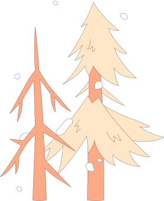

WHAT’S INSEASON ?
“什麼是旬食？”
LEARN MORE
01
EAT ON TIME
「旬食」的旬，指的是「當令」，也就是循著時令吃當季的食物。
在四季的輪轉中，身體也隨著變化，如春夏養陽，秋冬養陰。
飲食順應著季節而變化時，身體得到調和，人的感知也隨著清澈，
同時物產也擁有充裕的休息和營養。
Scroll it!
ABOUT INSEASON
「時島」提供一種新的飲食選擇方式。我們依循自然時令，以12
個月區分配置適宜的食材與料理。讓觀者理解四季的宜與忌，不侷
限於健康飲食，而是回歸自然的節奏，在對的時間選擇對的食物。
02
Scroll it!
03
CONTENT
我們循著自然中的規則—24節氣、陰陽五行，
建構出12座時島，呈現四季更迭的模樣。

WEATHER
氣候


BACK TO TOP